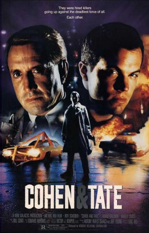

#7841 Hitman - In der Gewalt der Entführer
Alternativ: Cohen and Tate
 
 IMDB-Wertung: 6.4 / 10
IMDB-Wertung: 6.4 / 10  Metascore: 0
Metascore: 0 
A boy kidnapped by two mismatched hitmen puts them at each other's throats while being driven to their employers, possibly to be killed. Cohen, an older professional becomes increasingly irritated with his partner Tate, a brutish killer, when their prisoner uses unnatural guile and resourcefulness to play them off against each other.
Jahr: 1988
Dauer: 85 Minuten
FSK: 16
Land: USA Studio: Hemdale Releasing CorporationTonspuren: DD5.1 - ,
Untertitel:
Auflösung: 1080p (1920x1080) Größe: 7792 MB
Genre: Thriller, Krimi
Regisseur: Eric Red
Drehbuch: Eric Red
Soundtrack: Bill Conti
Darsteller:
 Roy Scheider als Cohen
Roy Scheider als Cohen Adam Baldwin als Tate
Adam Baldwin als Tate- Harley Cross als Travis Knight
- Cooper Huckabee als Jeff Knight
 Suzanne Savoy als Martha Knight
Suzanne Savoy als Martha Knight Marco Perella als FBI George
Marco Perella als FBI George- Tom Campitelli als FBI Fred
- Andy Gill als FBI Roy
- Ron Jackson als Trooper #3
- Kenneth McCabe als Gas Station Attendant
- Frank Bates als Highway Patrolman
- James Jeter als Trooper #1
- Jeff Bennett als Trooper #2
- Ted Baader als Trooper #4
- Ina B. Bott als Fat Woman
- Craig Busch als Farmer
Datei: X:\1988\Hitman - In der Gewalt der Entführer (1988, FSK16, 1920x1080).mkv seit 25.12.2017
Festplatte: HD 1987-1991
 Es gibt insgesamt 66 Filme in der Gruppe '1988'
Es gibt insgesamt 66 Filme in der Gruppe '1988'